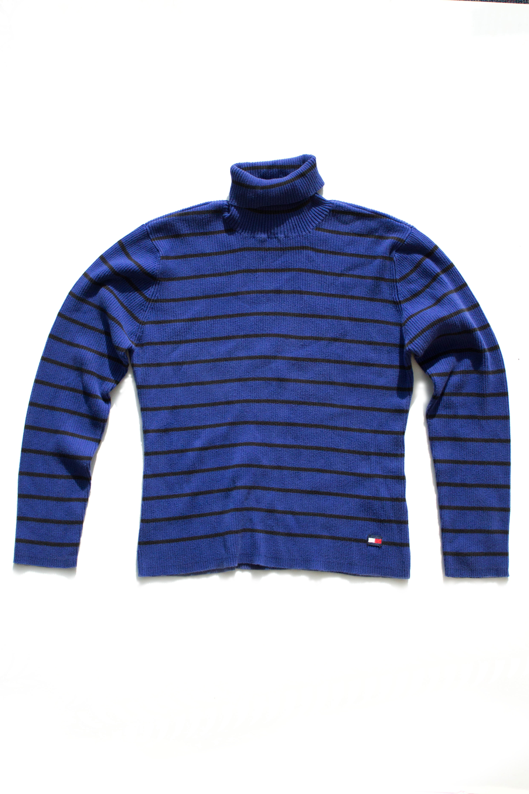

If you thought that this looks like part of a costume worn on stage by Puck in a middle school production of A Midsummer Night’s Dream as reimagined to take place in a loosely defined fairyland setting with an aesthetic inspired by Sergeant Pepper-era counterculture but directed by a high school sophomore born in the 1990s who thinks that setting Shakespeare plays in different time periods is artsy and innovative, you’d be correct. If you wondered why such an outlandish article of clothing should show so many signs of wear and use, then you’re asking the right questions.
The painted leather is chipping, a few of the tacky plastic stars are missing their tacky plastic beads, the seashell-shaped belt buckle is lopsided, and one hole is crimped where the buckle pinched the belt in the same place every time it was worn. The belt was only worn four times on stage – three shows plus a dress rehearsal – but it has clearly been worn more than that. One Friday after theatre practice the boy who wore it in the play – Puck – wore it home by mistake. On his way home he had to stop in town to get a haircut, and the man in the other barber’s chair complimented the boy’s belt. That was when the boy realized that he had forgotten to take it off. But he was already wearing it, and he was 1-0 on compliments, so he kept it on. As he wasted time in town (he had about an hour before his mother would pick him up), three more people said they liked his belt. Two were genuine and one was sarcastic, but the sarcastic man didn’t look particularly fashionable, so the boy decided that he must not know what he was talking about.
The boy waited excitedly through the weekend and wore the belt to school the following Monday. He wore a T-shirt that was just a little bit too small, to make sure the belt would be visible. After that, he waited eight days to wear it again – a Tuesday. He couldn’t wear it twice in the same week, and he couldn’t look like he was wearing it on a schedule. It had to be more organic than that. And so it went for a few weeks, and people gradually stopped mentioning the belt when he wore it until one week he forgot. Then someone mentioned it again.
“What happened to your belt?” It was an older student who the boy recognized by face if not by name.
“I’m sorry?”
“You’re that kid that wears the belt, right?”
“Yeah. I am.”
“What happened to it?”
“I just didn’t wear it this week.” He tried to sound casual.
“Oh. You should bring it back.”
“Yeah?”
“Yeah. It’s a good look.”
The next week, the belt was back for two days – and the second time, nobody told him he was trying too hard. He wasn’t trying. He was just the kid with the belt.